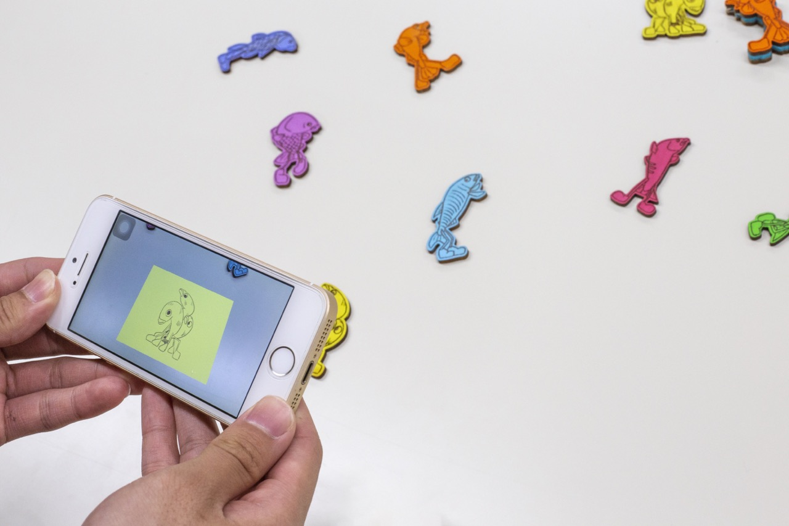

iOS Application ,2019
Natsuha Nakamura

Maker Faire Tokyo 2019に出展した際、ゲームをして獲得した景品に連動したARアプリケーション。画像認識で画像が再生するもので、琵琶湖に生息する固有種を総称で琵琶湖八珍と呼ぶ。琵琶湖の固有種をキャラクター化しARで動かすことにした。(現在アプリは配信していない)

Maker Faire Tokyo 2019に出展した際、ゲームをして獲得した景品に連動したARアプリケーション。画像認識で画像が再生するもので、琵琶湖に生息する固有種を総称で琵琶湖八珍と呼ぶ。琵琶湖の固有種をキャラクター化しARで動かすことにした。(現在アプリは配信していない)